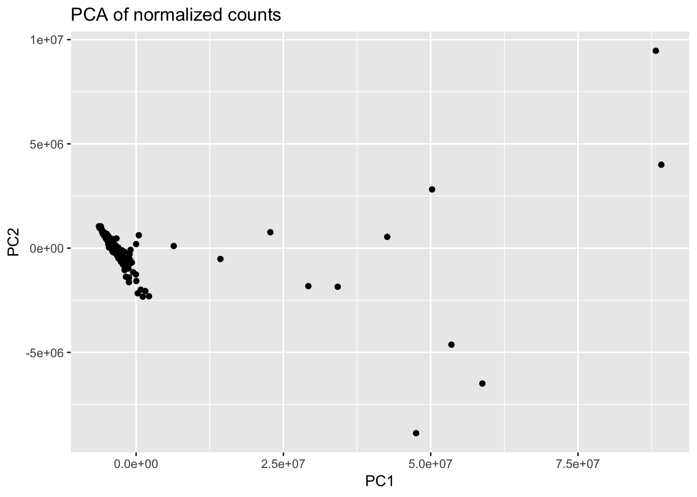
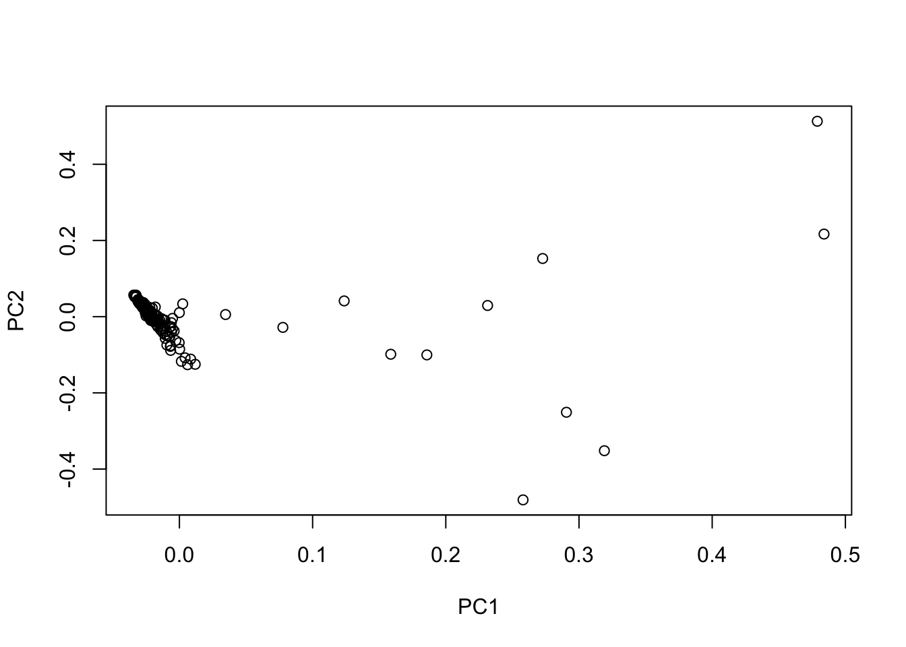
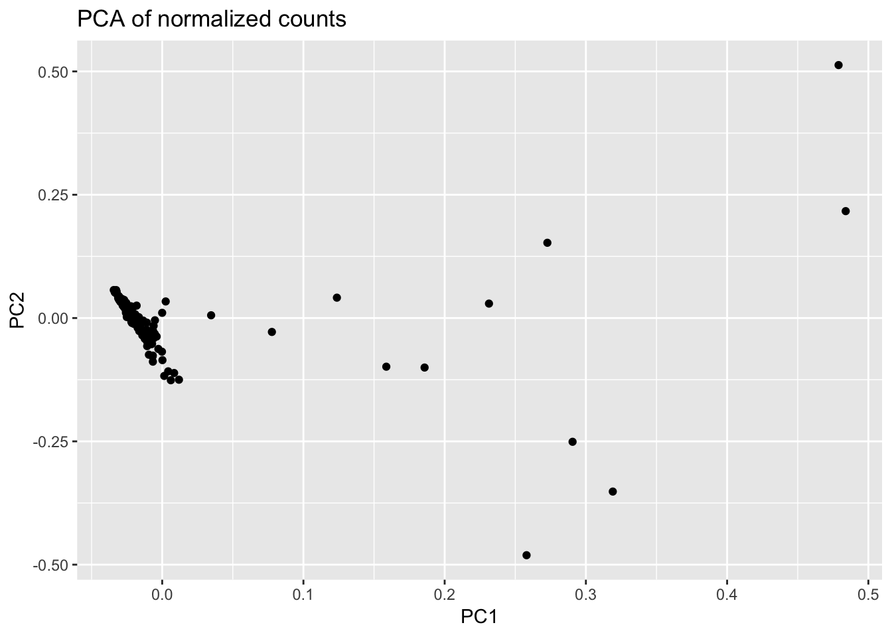

Last updated: 2018-08-12
workflowr checks: (Click a bullet for more information) ✖ R Markdown file: uncommitted changes
The R Markdown is untracked by Git. To know which version of the R Markdown file created these results, you’ll want to first commit it to the Git repo. If you’re still working on the analysis, you can ignore this warning. When you’re finished, you can run wflow_publish to commit the R Markdown file and build the HTML.
✔ Environment: empty
Great job! The global environment was empty. Objects defined in the global environment can affect the analysis in your R Markdown file in unknown ways. For reproduciblity it’s best to always run the code in an empty environment.
✔ Seed:
set.seed(12345)
The command set.seed(12345) was run prior to running the code in the R Markdown file. Setting a seed ensures that any results that rely on randomness, e.g. subsampling or permutations, are reproducible.
✔ Session information: recorded
Great job! Recording the operating system, R version, and package versions is critical for reproducibility.
✔ Repository version: 241c630
wflow_publish or wflow_git_commit). workflowr only checks the R Markdown file, but you know if there are other scripts or data files that it depends on. Below is the status of the Git repository when the results were generated:
Ignored files:
Ignored: .DS_Store
Ignored: analysis/.DS_Store
Ignored: analysis/figure/
Ignored: data/.DS_Store
Ignored: data/aux_info/
Ignored: data/hg_38/
Ignored: data/libParams/
Ignored: output/.DS_Store
Untracked files:
Untracked: _workflowr.yml
Untracked: analysis/Collection_dates.Rmd
Untracked: analysis/Converting_IDs.Rmd
Untracked: analysis/Global_var_hg38.Rmd
Untracked: analysis/Global_variation.Rmd
Untracked: analysis/Preliminary_clinical_covariate.Rmd
Untracked: analysis/Technical_confounders.Rmd
Untracked: analysis/VennDiagram2018-07-24_06-55-46.log
Untracked: analysis/VennDiagram2018-07-24_06-56-13.log
Untracked: analysis/VennDiagram2018-07-24_06-56-50.log
Untracked: analysis/VennDiagram2018-07-24_06-58-41.log
Untracked: analysis/VennDiagram2018-07-24_07-00-07.log
Untracked: analysis/VennDiagram2018-07-24_07-00-42.log
Untracked: analysis/VennDiagram2018-07-24_07-01-08.log
Untracked: analysis/View_DE_genes.Rmd
Untracked: analysis/analysis.Rmd
Untracked: analysis/correlations_bet_covariates.Rmd
Untracked: analysis/correlations_over_time.Rmd
Untracked: analysis/genocode_annotation_info.Rmd
Untracked: analysis/import_transcript_level_estimates.Rmd
Untracked: analysis/tximport.Rmd
Untracked: analysis/unnormalized_data.Rmd
Untracked: analysis/variables_by_time.Rmd
Untracked: data/405-BAN22201T1-MH0163673_AATCCAGC_S9_L001_R1_001/
Untracked: data/405-BAN22201T2-MH0163857_CGTCTAAC_S3_L004_R1_001/
Untracked: data/405-BAN22201T3-MH0167352_CTAAGACC_S31_L004_R1_001/
Untracked: data/405-BAN22202T1-MH0163700_CTTCCTTC_S19_L002_R1_001/
Untracked: data/405-BAN22202T2-MH0164426_GCACACAA_S4_L004_R1_001/
Untracked: data/405-BAN22202T3-MH0167384_ACTCCTAC_S18_L002_R1_001/
Untracked: data/405-BAN22203T1-MH0163897_TCCATTGC_S32_L004_R1_001/
Untracked: data/405-BAN22203T2-MH0164104_CTAAGACC_S21_L003_R1_001/
Untracked: data/405-BAN22204T1-MH0164041_CTTCCTTC_S19_L005_R1_001/
Untracked: data/405-BAN22204T2-MH0165543_CTCCTAGT_S8_L001_R1_001/
Untracked: data/405-BAN22204T3-MH0168921_AACTTGCC_S57_L006_R1_001/
Untracked: data/405-BAN22205T1-MH0164218_CGCTACAT_S7_L004_R1_001/
Untracked: data/405-BAN22205T2-MH0165296_AACTTGCC_S17_L002_R1_001/
Untracked: data/405-BAN22206T1-MH0164595_CGCTACAT_S7_L001_R1_001/
Untracked: data/405-BAN22206T2-MH0165241_GTCGAGAA_S6_L001_R1_001/
Untracked: data/405-BAN22206T3-MH0167362_CTCCTAGT_S68_L008_R1_001/
Untracked: data/405-BAN22207T1-MH0164655_ACAACAGC_S10_L001_R1_001/
Untracked: data/405-BAN22207T2-MH0165541_CCTTAGGT_S22_L003_R1_001/
Untracked: data/405-BAN22207T3-MH0168576_CGCTACAT_S75_L008_R1_001/
Untracked: data/405-BAN22208T1-MH0165002_CTCGAACA_S30_L003_R1_001/
Untracked: data/405-BAN22208T2-MH0165266_ATCGTCTC_S29_L003_R1_001/
Untracked: data/405-BAN22208T3-MH0168126_ACAACAGC_S48_L005_R1_001/
Untracked: data/405-BAN22209T1-MH0165265_AACTCGGA_S2_L004_R1_001/
Untracked: data/405-BAN22209T2-MH0165750_TCTAGGAG_S28_L003_R1_001/
Untracked: data/405-BAN22209T3-MH0168523_CGTCCATT_S16_L005_R1_001/
Untracked: data/405-BAN22210T1-MH0165547_AACCGAAC_S27_L003_R1_001/
Untracked: data/405-BAN22210T2-MH0166544_AACGCCTT_S26_L003_R1_001/
Untracked: data/405-BAN22210T3-MH0168587_CTTCCTTC_S56_L006_R1_001/
Untracked: data/405-BAN22212T1-MH0165601_GCACACAA_S4_L001_R1_001/
Untracked: data/405-BAN22212T2-MH0165753_CGTCCATT_S16_L002_R1_001/
Untracked: data/405-BAN22215T1-MH0165895_GACTACGA_S15_L005_R1_001/
Untracked: data/405-BAN22215T2-MH0166334_AATCCAGC_S9_L004_R1_001/
Untracked: data/405-BAN22215T3-MH0168486_CCTTAGGT_S32_L004_R1_001/
Untracked: data/405-BAN22216T1-MH0165949_CAAGCCAA_S31_L004_R1_001/
Untracked: data/405-BAN22216T2-MH0167360_GACTACGA_S15_L002_R1_001/
Untracked: data/405-BAN22216T3-MH0169379_CGTCTAAC_S47_L005_R1_001/
Untracked: data/405-BAN22218T1-MH0166539_GTACACCT_S14_L002_R1_001/
Untracked: data/405-BAN22218T2-MH0167895_CGACCTAA_S13_L002_R1_001/
Untracked: data/405-BAN22218T3-MH0169739_AATCCAGC_S14_L002_R1_001/
Untracked: data/405-BAN22219T1-MH0167403_CGTCTAAC_S3_L001_R1_001/
Untracked: data/405-BAN22219T2-MH0168012_ACTCCTAC_S18_L005_R1_001/
Untracked: data/405-BAN22219T3-MH0170053_CGTCCATT_S55_L006_R1_001/
Untracked: data/405-BAN22220T1-MH0167615_CCTATACC_S25_L003_R1_001/
Untracked: data/405-BAN22220T2-MH0168005_CCAACACT_S24_L003_R1_001/
Untracked: data/405-BAN22220T3-MH0169956_AACTCGGA_S2_L001_R1_001/
Untracked: data/405-BAN22221T1-MH0168112_ACCATCCT_S11_L005_R1_001/
Untracked: data/405-BAN22221T2-MH0168529_TACATCGG_S33_L004_R1_001/
Untracked: data/405-BAN22221T3-MH0171129_GTCGAGAA_S46_L005_R1_001/
Untracked: data/405-BAN22222T1-MH0168671_CTAAGACC_S21_L006_R1_001/
Untracked: data/405-BAN22222T2-MH0169515_TCTTCGAC_S74_L008_R1_001/
Untracked: data/405-BAN22224T1-MH0169098_CTTCCTTC_S73_L008_R1_001/
Untracked: data/405-BAN22224T2-MH0169571_GACTACGA_S21_L003_R1_001/
Untracked: data/405-BAN22224T3-MH0172869_AACCGAAC_S34_L004_R1_001/
Untracked: data/405-BAN22226T1-MH0169516_AACTTGCC_S22_L003_R1_001/
Untracked: data/405-BAN22226T2-MH0170691_ACGAGAAC_S23_L003_R1_001/
Untracked: data/405-BAN22226T3-MH0173165_GCACACAA_S24_L003_R1_001/
Untracked: data/405-BAN22228T1-MH0169654_CGTCCATT_S29_L003_R1_001/
Untracked: data/405-BAN22228T2-MH0171900_ATGACAGG_S28_L003_R1_001/
Untracked: data/405-BAN22228T3-MH0174229_ACCATCCT_S27_L003_R1_001/
Untracked: data/405-BAN22229T1-MH0170475_CTCCTAGT_S26_L003_R1_001/
Untracked: data/405-BAN22229T2-MH0171083_GTCGAGAA_S13_L002_R1_001/
Untracked: data/405-BAN22232T1-MH0171809_AACTCGGA_S76_L008_R1_001/
Untracked: data/405-BAN22232T2-MH0171901_GACTACGA_S15_L008_R1_001/
Untracked: data/405-BAN22232T3-MH0174220_ATCGTCTC_S71_L008_R1_001/
Untracked: data/405-BAN22233T1-MH0171922_GTACACCT_S4_L001_R1_001/
Untracked: data/405-BAN22233T2-MH0172715_GTACACCT_S30_L003_R1_001/
Untracked: data/405-BAN22233T3-MH0175373_ACGGACTT_S35_L004_R1_001/
Untracked: data/405-BAN22234T1-MH0172376_ACAACAGC_S10_L007_R1_001/
Untracked: data/405-BAN22234T2-MH0174414_CGCTACAT_S12_L002_R1_001/
Untracked: data/405-BAN22234T3-MH0177050_AACTCGGA_S49_L005_R1_001/
Untracked: data/405-BAN22235T1-MH0172813_TCCATTGC_S11_L002_R1_001/
Untracked: data/405-BAN22235T2-MH0173158_CGTCTAAC_S70_L008_R1_001/
Untracked: data/405-BAN22235T3-MH0175276_AACGCCTT_S36_L004_R1_001/
Untracked: data/405-BAN22236T1-MH0173201_CGACCTAA_S37_L004_R1_001/
Untracked: data/405-BAN22236T2-MH0174188_ACAACAGC_S15_L002_R1_001/
Untracked: data/405-BAN22239T1-MH0174265_ACTCCTAC_S25_L003_R1_001/
Untracked: data/405-BAN22239T2-MH0174778_TACATCGG_S12_L002_R1_001/
Untracked: data/405-BAN22239T3-MH0178097_CCTATACC_S38_L004_R1_001/
Untracked: data/405-BAN22240T1-MH0174969_CGCTACAT_S7_L007_R1_001/
Untracked: data/405-BAN22240T2-MH0175802_AACTTGCC_S17_L008_R1_001/
Untracked: data/405-BAN22242T1-MH0175396_ATGACAGG_S5_L008_R1_001/
Untracked: data/405-BAN22242T2-MH0177006_ACTCCTAC_S18_L008_R1_001/
Untracked: data/405-BAN22242T3-MH0181773_CAAGCCAA_S44_L005_R1_001/
Untracked: data/405-BAN22243T1-MH0175481_CCTATACC_S20_L002_R1_001/
Untracked: data/405-BAN22243T2-MH0176559_ACGGACTT_S3_L001_R1_001/
Untracked: data/405-BAN22243T3-MH0179740_TCTAGGAG_S39_L004_R1_001/
Untracked: data/405-BAN22245T1-MH0177498_ATGACAGG_S5_L004_R1_001/
Untracked: data/405-BAN22245T2-MH0179482_CAAGCCAA_S31_L007_R1_001/
Untracked: data/405-BAN22247T1-MH0178383_TCTTCGAC_S1_L001_R1_001/
Untracked: data/405-BAN22247T2-MH0179693_ACCATCCT_S11_L002_R1_001/
Untracked: data/405-BAN22248T1-MH0179252_CCAACACT_S24_L006_R1_001/
Untracked: data/405-BAN22248T2-MH0179936_ACGGACTT_S23_L003_R1_001/
Untracked: data/405-BAN22248T3-MH0184420_CCAACACT_S69_L008_R1_001/
Untracked: data/405-BAN22249T1-MH0179995_TCTTCGAC_S1_L005_R1_001/
Untracked: data/405-BAN22249T2-MH0180995_CTCGAACA_S2_L001_R1_001/
Untracked: data/405-BAN22250T1-MH0180438_GTCGAGAA_S6_L004_R1_001/
Untracked: data/405-BAN22250T2-MH0181264_GCACACAA_S4_L008_R1_001/
Untracked: data/405-BAN22251T1-MH0181000_AACTCGGA_S2_L007_R1_001/
Untracked: data/405-BAN22251T2-MH0181244_CTCGAACA_S30_L006_R1_001/
Untracked: data/405-BAN22252T1-MH0181193_AACCGAAC_S19_L002_R1_001/
Untracked: data/405-BAN22252T2-MH0181540_ATGACAGG_S5_L001_R1_001/
Untracked: data/405-BAN22253T1-MH0181369_TACATCGG_S1_L001_R1_001/
Untracked: data/405-BAN22253T2-MH0183318_CTCCTAGT_S8_L005_R1_001/
Untracked: data/405-BAN22254T1-MH0183287_CCAACACT_S10_L001_R1_001/
Untracked: data/405-BAN22254T2-MH0183347_CCTTAGGT_S22_L006_R1_001/
Untracked: data/405-BAN22254T3-MH0186085_AATCCAGC_S72_L008_R1_001/
Untracked: data/405-BAN22255T1-MH0186017_CCTTAGGT_S18_L002_R1_001/
Untracked: data/405-BAN22255T2-MH0186145_GTCGAGAA_S6_L007_R1_001/
Untracked: data/405-BAN22256T1-MH0186190_ACGAGAAC_S20_L005_R1_001/
Untracked: data/405-BAN22256T2-MH0186757_CGTCCATT_S16_L008_R1_001/
Untracked: data/405-BAN22256T3-MH0192924_TCCATTGC_S43_L005_R1_001/
Untracked: data/405-BAN22257T1-MH0186793_CTCCTAGT_S8_L008_R1_001/
Untracked: data/405-BAN22257T2-MH0187462_TCCATTGC_S32_L007_R1_001/
Untracked: data/405-BAN22258T1-MH0187064_AATCCAGC_S9_L007_R1_001/
Untracked: data/405-BAN22258T2-MH0187605_CTAAGACC_S6_L001_R1_001/
Untracked: data/405-BAN22258T3-MH0198483_ACCATCCT_S54_L006_R1_001/
Untracked: data/405-BAN22260T1-MH0187236_GTACACCT_S14_L005_R1_001/
Untracked: data/405-BAN22260T2-MH0188240_CTTCCTTC_S19_L008_R1_001/
Untracked: data/405-BAN22260T3-MH0198647_ATGACAGG_S42_L005_R1_001/
Untracked: data/405-BAN22261T1-MH0188182_ACGGACTT_S23_L006_R1_001/
Untracked: data/405-BAN22261T2-MH0191258_CGACCTAA_S7_L001_R1_001/
Untracked: data/405-BAN22262T1-MH0188248_TCTTCGAC_S1_L008_R1_001/
Untracked: data/405-BAN22262T2-MH0191318_CCTATACC_S25_L007_R1_001/
Untracked: data/405-BAN22266T1-MH0192891_ACAACAGC_S10_L004_R1_001/
Untracked: data/405-BAN22266T2-MH0197478_ACGAGAAC_S20_L002_R1_001/
Untracked: data/405-BAN22266T3-MH0201141_GACTACGA_S53_L006_R1_001/
Untracked: data/405-BAN22267T1-MH0197522_AACTTGCC_S17_L005_R1_001/
Untracked: data/405-BAN22267T2-MH0197979_ATCGTCTC_S29_L006_R1_001/
Untracked: data/405-BAN22268T1-MH0197785_TCTAGGAG_S28_L006_R1_001/
Untracked: data/405-BAN22268T2-MH0197998_CGACCTAA_S13_L006_R1_001/
Untracked: data/405-BAN22268T3-MH0203576_ACTCCTAC_S52_L006_R1_001/
Untracked: data/405-BAN22269T1-MH0197823_CGTCTAAC_S3_L007_R1_001/
Untracked: data/405-BAN22269T2-MH0197945_ATCGTCTC_S8_L001_R1_001/
Untracked: data/405-BAN22270T1-MH0199425_CAAGCCAA_S17_L002_R1_001/
Untracked: data/405-BAN22270T2-MH0199506_ACCATCCT_S11_L008_R1_001/
Untracked: data/405-BAN22271T1-MH0200966_AACGCCTT_S26_L007_R1_001/
Untracked: data/405-BAN22271T2-MH0201765_AACCGAAC_S27_L006_R1_001/
Untracked: data/405-BAN22271T3-MH0217142_CTCGAACA_S40_L004_R1_001/
Untracked: data/405-BAN22272T1-MH0201784_TACATCGG_S12_L006_R1_001/
Untracked: data/405-BAN22272T2-MH0202184_AACGCCTT_S16_L002_R1_001/
Untracked: data/405-BAN22272T3-MH0217144_GCACACAA_S41_L005_R1_001/
Untracked: data/405-BAN22274T1-MH0201904_TCTAGGAG_S9_L001_R1_001/
Untracked: data/405-BAN22274T2-MH0202323_ACGAGAAC_S5_L001_R1_001/
Untracked: data/405-BAN22274T3-MH0217163_TCTTCGAC_S45_L005_R1_001/
Untracked: data/BAK_BSP_001-BAN22202_RRED397T1_GTACACCT_S51_L006_R1_001/
Untracked: data/BAK_BSP_002-BAN22202_RRED397T2_ACGAGAAC_S50_L006_R1_001/
Untracked: data/BAK_BSP_003-BAN22220_RRED398T1_CGACCTAA_S58_L006_R1_001/
Untracked: data/BAK_BSP_004-BAN22220_RRED398T2_TACATCGG_S59_L007_R1_001/
Untracked: data/BAK_BSP_005-BAN22209_RRED399T1_ATCGTCTC_S60_L007_R1_001/
Untracked: data/BAK_BSP_006-BAN22209_RRED399T2_CCAACACT_S67_L007_R1_001/
Untracked: data/BAK_BSP_007-BAN22218_RRED424T1_TCTAGGAG_S66_L007_R1_001/
Untracked: data/BAK_BSP_008-BAN22218_RRED424T2_CTCGAACA_S65_L007_R1_001/
Untracked: data/BAK_BSP_009-BAN22226_RRED453T1_ACGGACTT_S64_L007_R1_001/
Untracked: data/BAK_BSP_010-BAN22226_RRED453T2_CTAAGACC_S63_L007_R1_001/
Untracked: data/BAK_BSP_011-BAN22228_RRED467T1_AACCGAAC_S62_L007_R1_001/
Untracked: data/BAK_BSP_012-BAN22228_RRED467T2_CCTTAGGT_S61_L007_R1_001/
Untracked: data/BAN2 Dates_T1_T2.xlsx
Untracked: data/BAN_DATES.csv
Untracked: data/BAN_DATES.xlsx
Untracked: data/BAN_DATES_txt.csv
Untracked: data/Blood_dates.txt
Untracked: data/Labels.csv
Untracked: data/Labels.xlsx
Untracked: data/RIN.xlsx
Untracked: data/RIN_over_time.csv
Untracked: data/RIN_over_time.xlsx
Untracked: data/T0_consolid.csv
Untracked: data/T0_consolid.xlsx
Untracked: data/age_t1.txt
Untracked: data/cmd_info.json
Untracked: data/counts_fc1.txt
Untracked: data/counts_fc1.txt.summary
Untracked: data/counts_hg38.RData
Untracked: data/counts_hg38_gc.RData
Untracked: data/files_list.txt
Untracked: data/final_covariates.csv
Untracked: data/gene_names_58387.txt
Untracked: data/logs/
Untracked: data/notimecovariates.csv
Untracked: data/only_individuals_biomarkers_weight_restoration_study.xlsx
Untracked: data/rest1t2_BI_hg37.rds
Untracked: data/rest1t2_BI_hg38.rds
Untracked: data/rest1t2_hg37.rds
Untracked: data/rest1t2_psych_meds_BMI_hg37.rds
Untracked: data/rest1t2_psych_meds_hg37.rds
Untracked: data/rest2t3_BI_hg37.rds
Untracked: data/rest2t3_BI_hg38.rds
Untracked: data/rest2t3_hg37.rds
Untracked: data/rest2t3_psych_meds_BMI_hg37.rds
Untracked: data/rest2t3_psych_meds_hg37.rds
Untracked: data/salmon_gene_matrix_bak_reorder_time.txt
Untracked: data/technical_sample_info.csv
Untracked: data/tx_to_gene.txt
Untracked: data/tx_to_gene_37.txt
Untracked: data/~$Labels.xlsx
Untracked: data/~$T0_consolid.xlsx
Untracked: docs/VennDiagram2018-07-24_06-55-46.log
Untracked: docs/VennDiagram2018-07-24_06-56-13.log
Untracked: docs/VennDiagram2018-07-24_06-56-50.log
Untracked: docs/VennDiagram2018-07-24_06-58-41.log
Untracked: docs/VennDiagram2018-07-24_07-00-07.log
Untracked: docs/VennDiagram2018-07-24_07-00-42.log
Untracked: docs/VennDiagram2018-07-24_07-01-08.log
Untracked: docs/figure/
Unstaged changes:
Modified: analysis/_site.yml
Modified: analysis/about.Rmd
Deleted: analysis/chunks.R
Modified: analysis/index.Rmd
Modified: analysis/license.Rmd
library(ggplot2)Warning: package 'ggplot2' was built under R version 3.4.4salmon_normalized_matrix_bak_psy <- read.delim("~/Dropbox/Lauren Blake/Bioinformatics results/salmon_normalized_matrix_bak_psy.txt", stringsAsFactors = FALSE)
salmon_normalized_matrix_bak_psy_new <- salmon_normalized_matrix_bak_psy[2:58387,2:157]
salmon_normalized_matrix_bak_psy_new <- as.data.frame(lapply(salmon_normalized_matrix_bak_psy_new, as.numeric))pca_genes <- prcomp(t(salmon_normalized_matrix_bak_psy_new), retx = TRUE, center = TRUE)
matrixpca <- pca_genes$x
PC1 <- matrixpca[,1]
PC2 <- matrixpca[,2]
pc3 <- matrixpca[,3]
pc4 <- matrixpca[,4]
pc5 <- matrixpca[,5]
pcs <- data.frame(PC1, PC2, pc3, pc4, pc5)
summary <- summary(pca_genes)
head(summary$importance[2,1:5]) PC1 PC2 PC3 PC4 PC5
0.98384 0.00988 0.00433 0.00073 0.00027 ggplot(data=pcs, aes(x=PC1, y=PC2)) + geom_point() + ggtitle("PCA of normalized counts") + scale_color_discrete(name = "Time")
X = t(scale(t(salmon_normalized_matrix_bak_psy_new),center=TRUE,scale=FALSE))
sv = svd(t(X))
U = sv$u
V = sv$v
D = sv$d
## in R calculate the rank of a matrix is by
#qr(t(X))$rank
plot(U[,1],U[,2],xlab="PC1",ylab="PC2")
U <- as.data.frame(U)
ggplot(data=U, aes(x=U[,1], y=U[,2])) + geom_point() + ggtitle("PCA of normalized counts") + scale_color_discrete(name = "Time") + xlab("PC1") + ylab("PC2")
# Variance explained
varex = 0
cumvar = 0
denom = sum(D^2)
for(i in 1:64){
varex[i] = D[i]^2/denom
cumvar[i] = sum(D[1:i]^2)/denom
}
## variance explained by each PC cumulatively
varex [1] 9.838422e-01 9.877316e-03 4.326723e-03 7.287938e-04 2.684467e-04
[6] 2.197882e-04 1.594983e-04 1.269681e-04 8.635820e-05 5.702918e-05
[11] 4.738876e-05 3.934830e-05 3.220687e-05 2.322825e-05 2.040884e-05
[16] 1.733707e-05 1.023373e-05 9.285636e-06 8.005826e-06 7.557632e-06
[21] 6.036405e-06 5.365607e-06 5.159289e-06 4.974001e-06 4.566929e-06
[26] 3.741852e-06 3.602788e-06 3.486813e-06 3.291274e-06 2.786146e-06
[31] 2.674853e-06 2.570556e-06 2.490691e-06 2.182977e-06 2.072396e-06
[36] 1.932638e-06 1.916982e-06 1.713701e-06 1.593576e-06 1.549520e-06
[41] 1.448357e-06 1.287638e-06 1.250472e-06 1.172238e-06 1.109533e-06
[46] 9.854453e-07 9.463655e-07 9.262054e-07 8.462598e-07 8.257173e-07
[51] 7.736189e-07 7.658542e-07 6.725545e-07 6.493292e-07 6.389621e-07
[56] 5.807724e-07 5.487845e-07 5.112493e-07 4.917580e-07 4.779925e-07
[61] 4.642385e-07 4.609820e-07 4.097248e-07 3.880745e-07cumvar [1] 0.9838422 0.9937196 0.9980463 0.9987751 0.9990435 0.9992633 0.9994228
[8] 0.9995498 0.9996361 0.9996932 0.9997405 0.9997799 0.9998121 0.9998353
[15] 0.9998557 0.9998731 0.9998833 0.9998926 0.9999006 0.9999082 0.9999142
[22] 0.9999196 0.9999247 0.9999297 0.9999343 0.9999380 0.9999416 0.9999451
[29] 0.9999484 0.9999512 0.9999538 0.9999564 0.9999589 0.9999611 0.9999632
[36] 0.9999651 0.9999670 0.9999687 0.9999703 0.9999719 0.9999733 0.9999746
[43] 0.9999759 0.9999770 0.9999781 0.9999791 0.9999801 0.9999810 0.9999818
[50] 0.9999827 0.9999834 0.9999842 0.9999849 0.9999855 0.9999862 0.9999867
[57] 0.9999873 0.9999878 0.9999883 0.9999888 0.9999892 0.9999897 0.9999901
[64] 0.9999905salmon_normalized_matrix_bak_psy <- read.delim("~/Dropbox/Lauren Blake/Bioinformatics results/salmon_gene_matrix_bak_psy.txt", stringsAsFactors = FALSE)
dim(salmon_normalized_matrix_bak_psy)[1] 58387 157salmon_normalized_matrix_bak_psy_new <- salmon_normalized_matrix_bak_psy[1:58387,2:157]
salmon_normalized_matrix_bak_psy_new <- as.data.frame(lapply(salmon_normalized_matrix_bak_psy_new, as.numeric))
# Take the standard deviation
check_sd <- apply(salmon_normalized_matrix_bak_psy_new, 1, sd)
summary(check_sd > 1) Mode FALSE TRUE
logical 29135 29252 # log2
check_sd <- apply(log2(salmon_normalized_matrix_bak_psy_new), 1, sd)
summary(check_sd > 1) Mode FALSE TRUE NA's
logical 10905 776 46706 # log10
check_sd <- apply(log10(salmon_normalized_matrix_bak_psy_new), 1, sd)
summary(check_sd > 1) Mode FALSE NA's
logical 11681 46706 sessionInfo()R version 3.4.3 (2017-11-30)
Platform: x86_64-apple-darwin15.6.0 (64-bit)
Running under: OS X El Capitan 10.11.6
Matrix products: default
BLAS: /Library/Frameworks/R.framework/Versions/3.4/Resources/lib/libRblas.0.dylib
LAPACK: /Library/Frameworks/R.framework/Versions/3.4/Resources/lib/libRlapack.dylib
locale:
[1] en_US.UTF-8/en_US.UTF-8/en_US.UTF-8/C/en_US.UTF-8/en_US.UTF-8
attached base packages:
[1] stats graphics grDevices utils datasets methods base
other attached packages:
[1] ggplot2_3.0.0
loaded via a namespace (and not attached):
[1] Rcpp_0.12.18 compiler_3.4.3 pillar_1.3.0
[4] git2r_0.23.0 plyr_1.8.4 workflowr_1.1.1
[7] bindr_0.1.1 R.methodsS3_1.7.1 R.utils_2.6.0
[10] tools_3.4.3 digest_0.6.15 evaluate_0.11
[13] tibble_1.4.2 gtable_0.2.0 pkgconfig_2.0.1
[16] rlang_0.2.1 yaml_2.2.0 bindrcpp_0.2.2
[19] withr_2.1.2 stringr_1.3.1 dplyr_0.7.6
[22] knitr_1.20 rprojroot_1.3-2 grid_3.4.3
[25] tidyselect_0.2.4 glue_1.3.0 R6_2.2.2
[28] rmarkdown_1.10 purrr_0.2.5 magrittr_1.5
[31] whisker_0.3-2 backports_1.1.2 scales_0.5.0
[34] htmltools_0.3.6 assertthat_0.2.0 colorspace_1.3-2
[37] labeling_0.3 stringi_1.2.4 lazyeval_0.2.1
[40] munsell_0.5.0 crayon_1.3.4 R.oo_1.22.0
This reproducible R Markdown analysis was created with workflowr 1.1.1